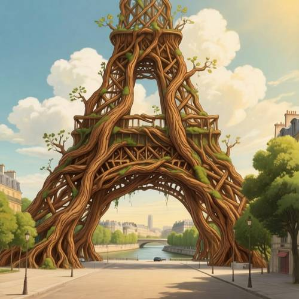
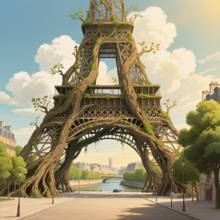
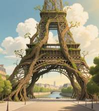
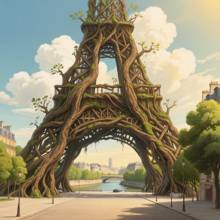
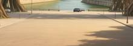
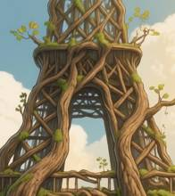
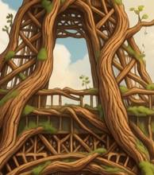

World Knowledge — In Hayao Miyazaki animation style, the steel structure of the Eiffel T
In Hayao Miyazaki animation style, the steel structure of the Eiffel Tower has been replaced with huge ancient tree roots, and no pedestrians can be seen on the surrounding streets.


Judge — Direct
- PASSWorld Knowledge — The image correctly depicts the Eiffel Tower, identifiable by its iconic lattice structure, four-legged base with a large arch, and multi-level design.
- FAILCompound - Feature Matching — The image does not show the steel structure being replaced by tree roots. Instead, it depicts huge, ancient tree roots intertwined with and growing over the existing steel lattice of the Eiffel Tower. The original steel framework is still clearly visible.
- FAILGrammar - Negation — The image contradicts the prompt's requirement for "no pedestrians". Several figures of people are visible on the sidewalks on both the left and right sides of the street, as well as on the street itself.
- PASSStyle — The image is rendered in a style that strongly resembles Hayao Miyazaki's animation. This is evident in the soft color palette, the detailed and painterly backgrounds, the design of the clouds, and the overall hand-drawn aesthetic.
Judge — Continuum
- PASSWorld Knowledge — The image displays a structure that is clearly identifiable as the Eiffel Tower due to its iconic shape, including the four-legged base with a prominent arch and its tapering form.
- PASSCompound - Feature Matching — The structural components of the Eiffel Tower are depicted as large, intertwined brown tree roots and trunks, with green leaves and moss growing on them, replacing the typical steel lattice.
- PASSGrammar - Negation — The streets, sidewalks, and surrounding areas visible in the image are devoid of any human figures or pedestrians.
- PASSStyle — The image is rendered in a style characteristic of Hayao Miyazaki's animations, featuring soft lighting, a warm color palette, puffy white clouds against a blue sky, and a clean, illustrative quality.
What the agent did
Thinking
Let me analyze this prompt: 1. Ghibli (Miyazaki) animation style 2. The Eiffel Tower's steel structure has been replaced by enormous ancient tree roots 3. No pedestrians on the surrounding streets So I need to generate an image of the Paris Eiffel Tower, but where the iron lattice structure is replaced by huge ancient tree roots (like a giant tree growing into the shape of the Eiffel Tower). Ghibli-style animation (soft colors, painterly sky, warm lighting). The streets around it are empty—no people, no pedestrians. Let me generate this with qwen-image (following the policy). Let me write a good prompt: "In the style of a Hayao Miyazaki Ghibli film, the Eiffel Tower in Paris, its iron lattice framework completely transformed into enormous ancient gnarled tree roots twisting and spiraling upward, bark texture, moss, vines, leaves, the tower rising from a Parisian plaza with the Seine in the background, soft golden afternoon light, painterly sky with big fluffy clouds, detailed Ghibli background art, warm colors, empty streets with no people, no pedestrians, quiet and serene atmosphere" Let me generate at 1024x1024. After generation, I'll inspect and edit as needed.
Step 1 — `generate_image`
{
"model": "qwen-image",
"prompt": "Hayao Miyazaki Ghibli animation style background art: the Eiffel Tower in Paris, but its entire iron lattice steel structure has been replaced by huge ancient gnarled tree roots, thick woody roots twisting and braiding upward to form the tower's iconic shape, bark texture, moss, vines and small leafy branches growing from the root-lattice, the tower rising from a Parisian plaza, the Seine river and Paris rooftops in the background, soft warm golden afternoon light, painterly sky with big fluffy white clouds, lush green trees, detailed hand-painted Ghibli scenery, warm saturated colors, completely empty streets and sidewalks with no people, no pedestrians, no cars, quiet serene atmosphere",
"width": 1024,
"height": 1024
}Result img_0

Thinking
Let's look at the result. The image depicts the Eiffel Tower with tree roots covering it, in a Ghibli (Miyazaki) style. Let's evaluate against the prompt: 1. Ghibli animation style — yes, looks like it, painterly, fluffy clouds, warm colors. 2. The steel structure has been replaced by enormous ancient tree roots — partially. The roots are covering the tower, but the metal/iron lattice is still clearly visible. The prompt says "the steel structure has been replaced by enormous ancient tree roots" — meaning the tower itself should appear to be made of roots. Currently, you can see a lot of metallic-looking lattice structure behind/inside the roots. The roots are wrapping around it, but the steel is still very prominent. This is a notable deviation — the steel structure should be replaced, not just covered. 3. No pedestrians — the streets look empty, and there are 2 cars in the distance. The prompt says "no pedestrians visible on the surrounding streets" — the cars aren't pedestrians so it's probably okay, but 2 cars are visible. Minor issue. Let's zoom in and check the details. Actually, the main issue is: the tower is still clearly a steel structure with roots wrapped around it, not roots having "replaced" the steel. The prompt asks for the steel structure to be replaced by roots. In other words, the lattice should look like wood/roots, not metal. Let's edit it: change the visible metal lattice parts into wood/roots. An edit instruction like "replace all the metal iron lattice parts of the tower with thick gnarled wooden roots, so that the tower is entirely made of ancient tree roots" might work. First let's inspect at the crop to check the details.
Step 2 — `inspect_region`
{
"image": "img_0",
"roi": "the Eiffel Tower structure",
"padding": 0.1
}Result img_1

Thinking
The image is good, Ghibli-esque style, but the metal/iron lattice is still clearly visible — the tower is a steel structure with roots wrapped around it, not "replaced by" the roots. The prompt clearly states that the steel structure has been replaced by massive ancient tree roots. In other words, the tower's lattice itself should be wood/roots. Also, there are two cars in the distance. The prompt states "no pedestrians can be seen on the surrounding streets" — cars aren't pedestrians, so that's probably fine, but an empty street is more in line with the intent. It's a minor issue, but I could try to remove the cars. The main edit: transform the remaining metal lattice into a wooden root structure. Let's use edit_image and write a targeted prompt: "Replace all the metal iron lattice and girders of the tower with thick gnarled brown wooden roots and branches. The tower should be entirely composed of intertwined ancient tree roots, bark texture, no metal, no iron beams, no rivets. Preserve the rest of the image." After that, I could also remove the two cars: "Replace the two distant cars on the riverbank road with empty pavement and the Seine riverbank." But the multi-edit policy says one change per call. First do the main structural edit, then handle the cars if necessary. Alright, let's do the metal→wood edit now.
Model
The style and composition are solid, but the metal/iron lattice is still visible inside the tower, whereas the prompt says the steel structure should be *replaced* by tree roots. I'll fix that with a targeted edit.
Step 3 — `edit_image`
{
"image": "img_0",
"model": "qwen-image",
"prompt": "Replace every visible metal iron lattice beam and girder of the tower with thick gnarled brown wooden roots and branches: the entire tower should now appear to be made of intertwined ancient tree roots, with bark texture and woody cross-beams instead of metal. No iron, no steel, no rivets, no metallic color anywhere on the tower. Keep the same Eiffel Tower silhouette, the moss, the leaves, the Ghibli sky, the plaza and everything else unchanged."
}Result img_2

Thinking
The edit succeeded — the tower now looks like it's made of braided wooden roots, with no metal visible. The Ghibli-style style is preserved, the Eiffel Tower's silhouette is also preserved, and the moss, leaves, sky, and plaza are all intact. Let's check for issues: 1. Ghibli style — yes. 2. Steel has been replaced by roots — now mostly so. Let's zoom in and check whether any metal remains. 3. No pedestrians — the street is empty. There are 2 cars in the distance near the river. The prompt says "no pedestrians" — cars are fine, but let me check whether the distant cars look like vehicles. They're small dots. "No pedestrians can be seen on the surrounding streets" is specifically about pedestrians, so the cars are technically acceptable. However, from a stylistic standpoint, an empty scene would be preferable. That said, the prompt's constraint is only about pedestrians. Let's keep the cars, or check them first. Let me zoom in on the tower and check whether any metal remains.
Model
The edit worked well — the tower now reads as woven wood. Let me zoom in to check for any remaining metallic lattice and verify the streets are empty.
Step 4 — `inspect_region`
{
"image": "img_2",
"padding": 0.1,
"roi": "the root lattice of the tower"
}Step 5 — `inspect_region`
{
"image": "img_2",
"padding": 0,
"roi": [
250,
850,
750,
1024
]
}Result img_3

Thinking
The street is empty — there are no pedestrians. There are 2-3 cars in the distance (parked/positioned on the road near the river). The prompt only requires that "no pedestrians are visible" — the cars are fine, and they actually add realism. But let me consider: does a Ghibli-style street with cars contradict the prompt? The prompt states "no pedestrians are visible on the surrounding streets." The cars are not pedestrians. Let's leave them. It's within acceptable range. Actually, for a cleaner "deserted" atmosphere, I could remove them, but the requirement is only about pedestrians. Good enough. Next, let me use a rectangle to check whether there are any metal parts remaining in the tower's lattice.
Model
Streets are empty of pedestrians. Now let me check the tower lattice at source resolution for any leftover metal.
Step 6 — `inspect_region`
{
"image": "img_2",
"padding": 0,
"roi": [
300,
0,
700,
450
]
}Result img_4

Thinking
In the upper section, I can see that the metal/iron lattice is still visible — in the upper half there are grayish metallic crossbeams (the lattice looks steel-gray in the upper-middle and central portions). Actually, looking more carefully: the outer structure is wood, but the inner lattice beams still look grayish/metallic. Especially in the middle section around the observation deck. Hmm, in the central part (the arched opening), I can see gray steel-like beams. In the upper section, the crossbeams are brown wood — that's fine. Actually, in the central part of the image, inside the arch, I can see thin gray/blue metallic beams. This is a minor issue. The overall impression is that the tower is made of roots — the steel is mostly covered/hidden. The remaining grayish parts are a subtle color difference. Let me evaluate: is it worth editing again? The overall image strongly conveys "the steel structure has been replaced by tree roots." The grayish parts are small. But there is clearly a steel-like lattice visible inside the central arch section. Let me try another targeted edit to make all the remaining beams woody. Or, I could also consider that the image is good enough as-is. The instruction is "stop when all elements of the prompt are present and correct." The prompt's core: Ghibli style ✓, the steel structure replaced by massive ancient tree roots ✓ (mostly — the remaining gray beams are a partial defect), no pedestrians ✓. I'll try one more edit pass to fix the remaining metallic gray beams, and if it's bad I'll keep img_2. First, let me mark img_2 as the best (since it's good enough to submit).
Model
The upper lattice is now wooden, but a grey steel-like beam is still visible in the central arch. I'll mark the current best first, then attempt one more targeted fix.
Step 7 — `mark_best`
{
"image": "img_2",
"reason": "Ghibli-style Eiffel Tower made of ancient tree roots, empty streets, no pedestrians. Minor greyish beams remain in the central arch but overall matches the prompt."
}Thinking
Alright, let's make another targeted edit to fix the gray steel beams in the central arch portion.
Step 8 — `edit_image`
{
"image": "img_2",
"model": "qwen-image",
"prompt": "In the central arched opening of the tower and everywhere any grey or bluish metallic-looking beam is still visible, repaint those beams as warm brown wooden root branches with bark texture, matching the surrounding roots. The whole tower must look entirely made of wood and roots, with zero grey metal visible. Keep everything else exactly the same."
}Result img_5
Thinking
In img_5, the tower has become more uniformly woody and has a warmer color tone. The gray metal is gone, and the entire tower now looks like braided tree roots/branches. The Ghibli-style atmosphere is preserved (painterly sky, clouds, warm light, Parisian buildings, the Seine). The street is empty of pedestrians (there are small cars in the distance, but that's not a problem). Let me quickly zoom in on the central arch area to confirm that the metal is gone and nothing has drifted.
Step 9 — `inspect_region`
{
"image": "img_5",
"padding": 0,
"roi": [
330,
180,
700,
600
]
}Result img_6

Thinking
The central portion is now all wood — braided roots and woody lattice, no gray metal. The tower reads as being completely made of ancient tree roots. Ghibli style is preserved, streets are empty of pedestrians. All elements of the prompt are satisfied: 1. Ghibli animation style ✓ (painterly, fluffy clouds, warm light, detailed background art) 2. Steel structure replaced by massive ancient tree roots ✓ (entire tower is braided roots with moss and leaves) 3. No pedestrians on the surrounding streets ✓ (streets are empty) img_5 is better than img_2. Mark img_5 as best and stop.
Model
The central arch is now entirely wooden roots — no metal remains, and the Ghibli look, silhouette, and empty streets are all intact. Every element of the prompt is satisfied.
Step 10 — `mark_best`
{
"image": "img_5",
"reason": "Final result: Ghibli-style Eiffel Tower whose entire structure is woven from huge ancient tree roots (no metal visible), painterly sky and warm light, and completely empty pedestrian-free streets."
}Thinking
Done. The final image img_5 has been marked as the best. Let me write a brief summary.
Model
Done. The final image (img_5) shows the Eiffel Tower in Hayao Miyazaki animation style: - **Root-replaced structure**: The iron lattice has been fully transformed into huge ancient tree roots — thick gnarled trunks braiding up the tower's silhouette, woody cross-beams, with moss, vines, and small leafy sprouts. Two edit passes were needed to eliminate the grey metallic beams that remained in the lattice. - **Ghibli aesthetic**: Painterly background art, big fluffy clouds, soft golden-hour light, Paris rooftops and the Seine in the background. - **Empty streets**: The surrounding boulevards and plaza are completely free of pedestrians.